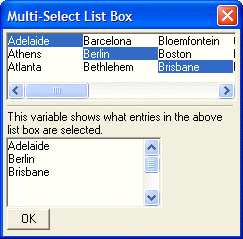

Multi-Column List Box
By including the %C=column width% directive in the definition of the list box control, you can specify that the list box should be displayed in multiple columns. For example, the following specifies a list box control that has 3 columns, each 30 characters wide (the list box width is 90 characters).
[%C=30%.90,5cities_chosen^#cities]; |
To turn on horizontal scrolling, use the H directive in the format string. For example:
[%C=30;H%.90,5cities_chosen^#cities]; |
As you can see in the above example, when you have multiple directives in a format string, you separate them with a semi-colon.
The following example is a variation of the previous multi-select example. In this example, we convert the list box to 3 columns, and enable horizontal scrolling.
cities = "Atlanta,New York,Los Angeles,Boston,Johannesburg,Sydney,Perth,Adelaide,Brisbane," cities = cities + "Darwin,Melbourne,Cape Town,Pretoria,Bloemfontein,Bethlehem,Tel Aviv,Jerusalem," cities = cities + "Little Rock,Paris,London,Munich,Nice,Frankfurt,Berlin,Athens,Barcelona,Madrid" cities = stritran(cities,",",crlf()) dim a_cities[100] as C a_cities.initialize(cities) a_cities.sort() ui_dlg_box("Multi-Select List Box",<<%dlg% {wrap=45} [%M;c=15;H%.45,5cities_chosen^#a_cities]; {line=1,0}; This variable shows what entries in the above list box are selected.; [%mw%.30,5cities_chosen]; %dlg%) |
This script creates this dialog box:

Lesson 2: Multi-Column List Box
Next
Limitations
Desktop applications only